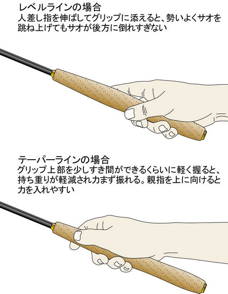
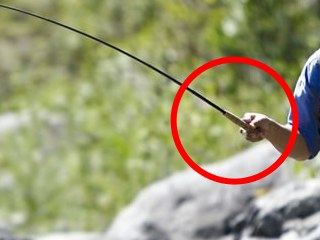
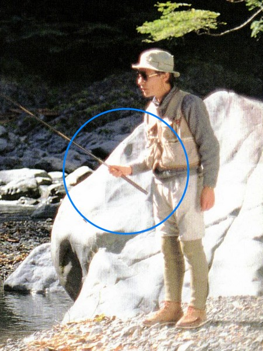
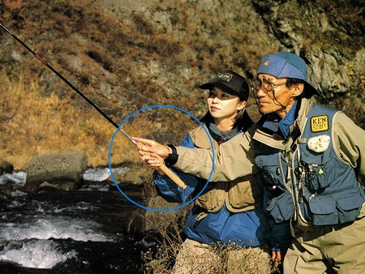

ティップス
キャストの前に テンカラ竿の握り方について
昨年、2020年の秋に、ニジマス釣り場において久しぶりにテンカラ釣りを行った。それ以来、この釣法のことをいろいろと調べるようになった。
ウェブサイト、ブログ、YouTube、など、いろいろと見て回っているうちに、？？？ と疑問に思えることを発見した。
テンカラ竿のグリップの、どこを、どんなふうに握るか？ ということである。
現代のメディアにおいいて多く見られる握り方は、グリップの竿尻付近を持つ握り方である。
ウェブサイト


このホンダの釣り倶楽部の記事では、レベルラインとテーパーラインとで、異なる握り方が紹介されている。
そして記事内には次のような記述もある。
レベルラインの場合、振り込みで大切なのはサオを振るスピード。（中略） 軽いレベルラインでも、充分なスピードでサオを振ればスムーズに毛バリを飛ばすことができる
TouTube


久しぶりにテンカラについて調べたので、どういう経緯で「現在の主流」がレベルラインになっていて、テーパーラインが過去の遺物のように扱われているのかもわからなかったが、作者が感じた疑問点は以下のようなことである。
- 果たして、レベル・テーパーというラインの違いで、竿の握り方を変える必要があるのか？
Honda 釣り倶楽部の記事で、石垣尚男氏が解説されているように、レベルラインを使う場合には、ロッドをより速く振ることが必要ならば、グリップの上部、すなわち竿の重心点に近い位置を握り、がまかつのウェブサイトで説明されているように、「竿のモーメント：重心位置（cm）×竿の自重（kg）」が小さくなるようにした方が、素早く手首のスナップを効かせられ、楽に長時間キャストを続けられるであろう。
余談だが、がまかつ社が自社製ロッドの特性をあらわすのにこの「モーメント」という指標を使っていることは、Teton Tenkara というアメリカのブログ内の記事で初めて知った。 - グリップの下方、竿尻を持つと、竿を振る時にてこの作用でストロークが大きくなり、小さな動作で楽にキャストが出来るという解説を、Tenkara USA の Gallado 氏がされていた。確かにその利点はあるかもしれないが、反面、魚が素早く毛バリに出た時に、大振りになってしまい、合わせが遅れるという欠点があると思う。
合わせのタイミングは、魚種、ポイント、季節、使うフライの種類などで変わるが、自分の思った瞬間にフライを動かしてフックを魚の顎に刺すためには、スナップの効く、グリップ上部を握る方が理にかなっていると思われる。 - 人差し指を伸ばしてグリップに添える握り方は、短く軽い竿なら良いと思う。しかし、現在の竿は素材・製法の進歩によりかなり軽くなったとは言え、3.6m以上もある長い竿を１日振り続けたら、指・手首にかなり負担がかかると思われる。事実、ネット上の記事にはそうした感想も見られた。
先人から学ぶ
堀江渓愚氏
精鋭たちのテンカラ・テクニック

テンカラ毛バリ術

桑原玄辰氏
毛バリ釣りの楽しみ方
https://www.youtube.com/watch?v=ZxNsXlawdlw
グリップの上端、ブランクに触れるあたり
利点：
欠点：
グリップの中ほど
利点：
欠点：
グリップの下端
利点：
欠点：
テンカラ竿のグリップの長さの意味
カウンターウェイト
フライフィッシングではリールが重みとなる
餌釣りの竿にはあれほど長いグリップは付いていない
https://search.kakaku.com/%83_%83C%83%8f%20%83%8d%83b%83h%20%8ck%97%ac%8a%c6/?category=0009_0004_0016&sort=clkrank_d
https://paypaymall.yahoo.co.jp/store/zeniya-tsurigu/item/116138/?sc_e=afvc_shp_2801420
どのように握るか？
人差し指をグリップに添えて伸ばす方法
スーツケースのハンドルを握るような方法
フライフィッシングにおけるVグリップ
親指をグリップに添えて伸ばす方法
フライフィッシング的 サム・オン・トップ
ティップス 目次へ
サイトマップ
ホームへ
お問い合わせ